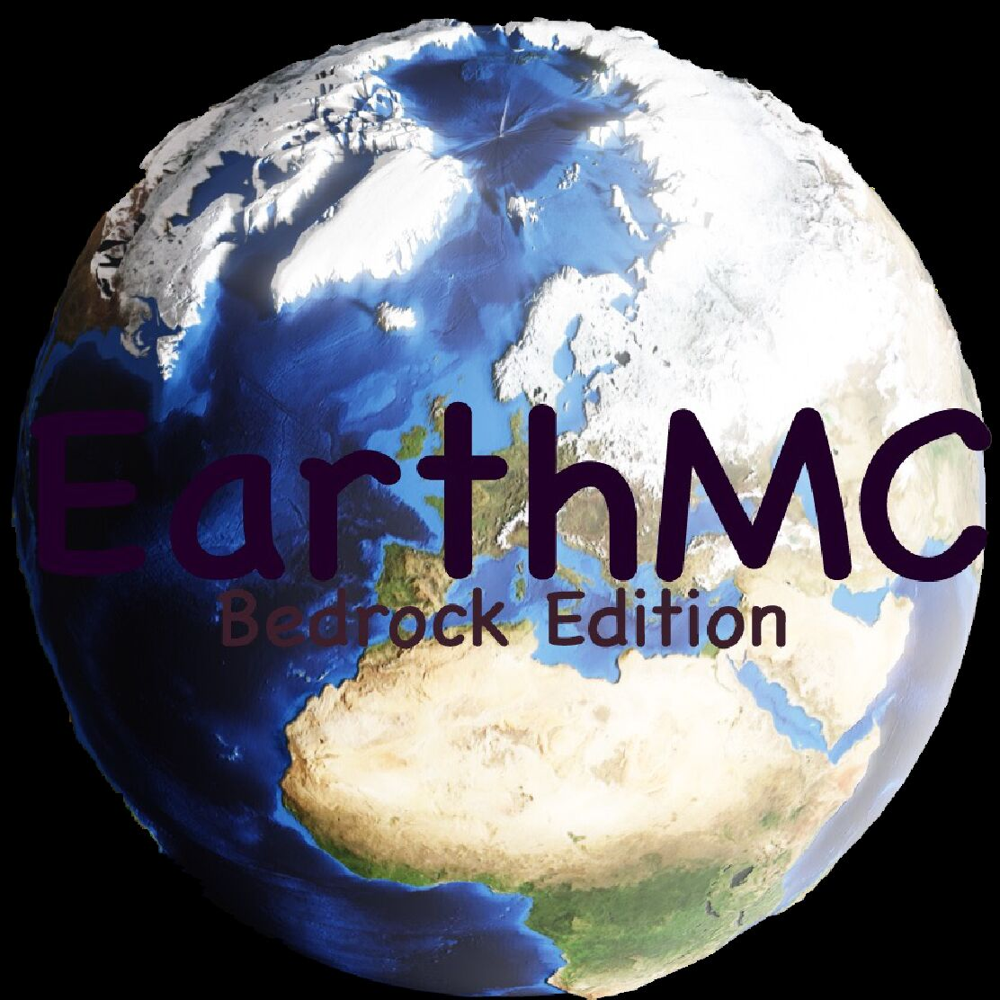
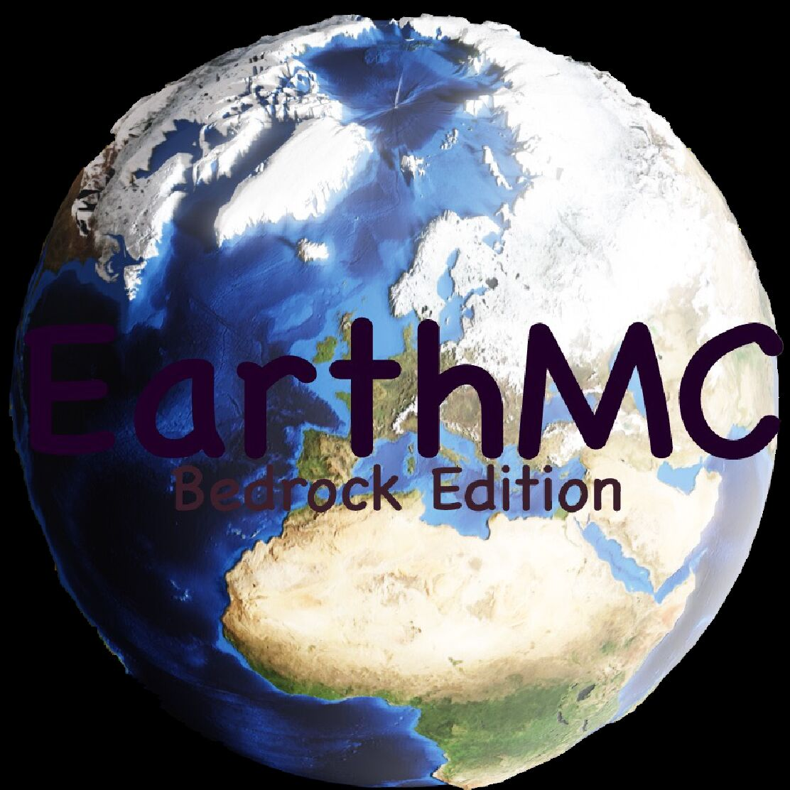
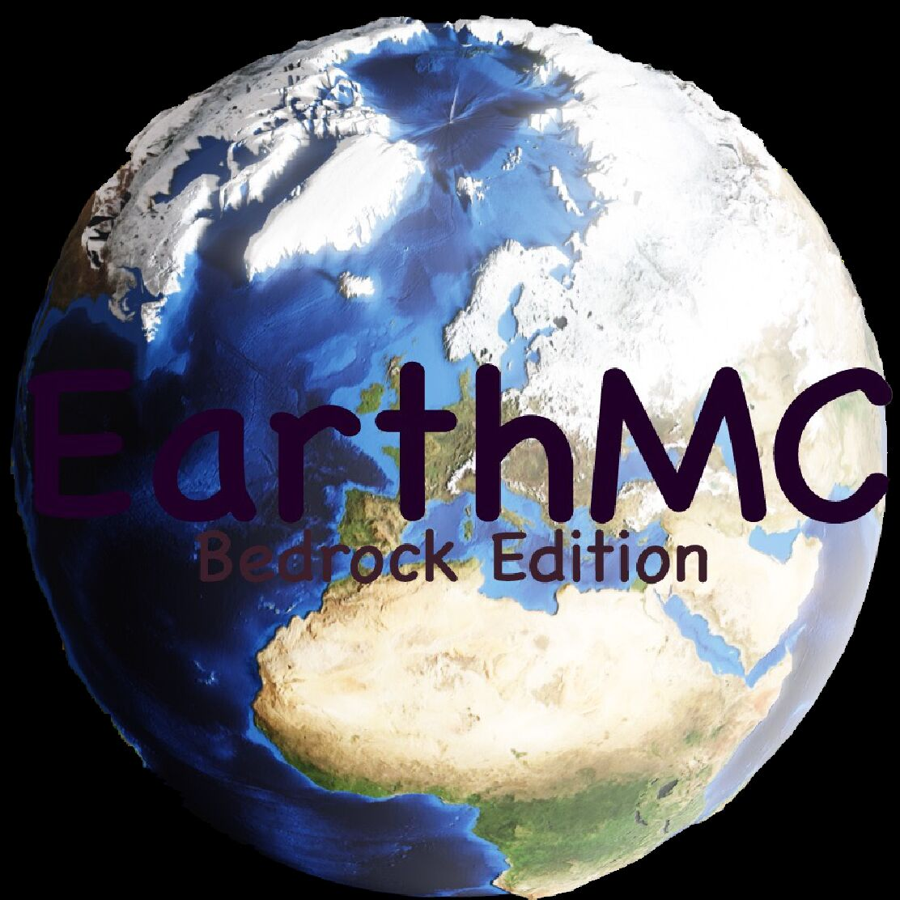
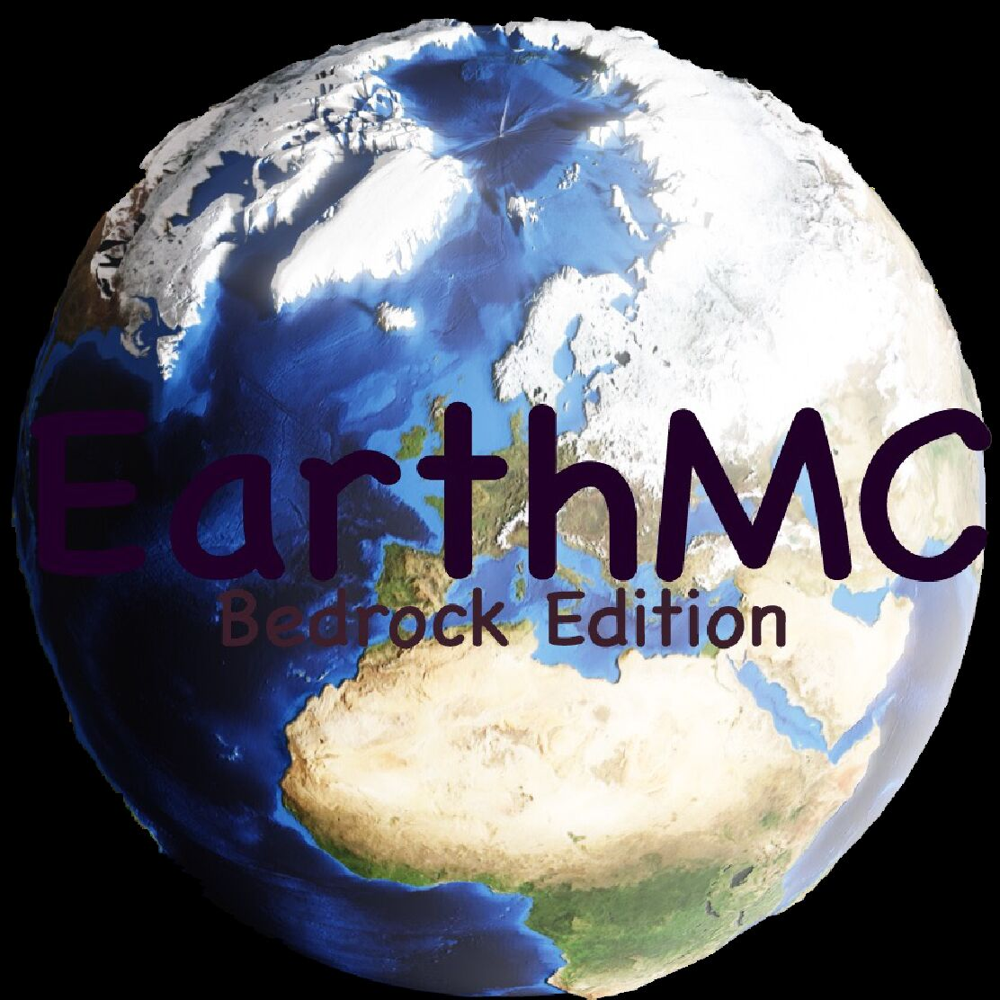

Get Started
In order to prevent the server from being damaged by some player, the server has enabled the
whitelist, and all players are invited to join the group chat to ask the administrator for gaining
access to enter the server. Click this image below to join the QQ group

